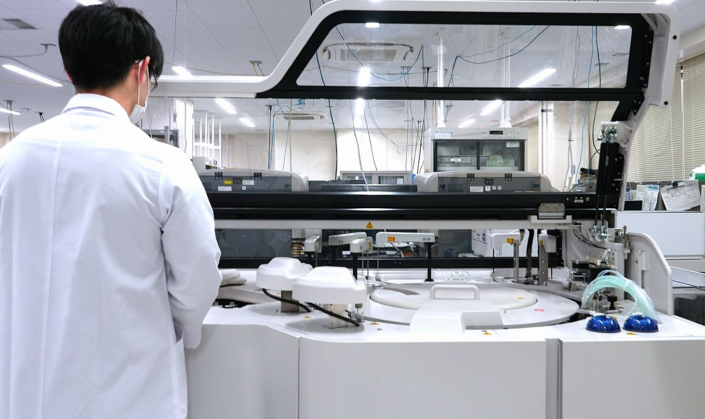
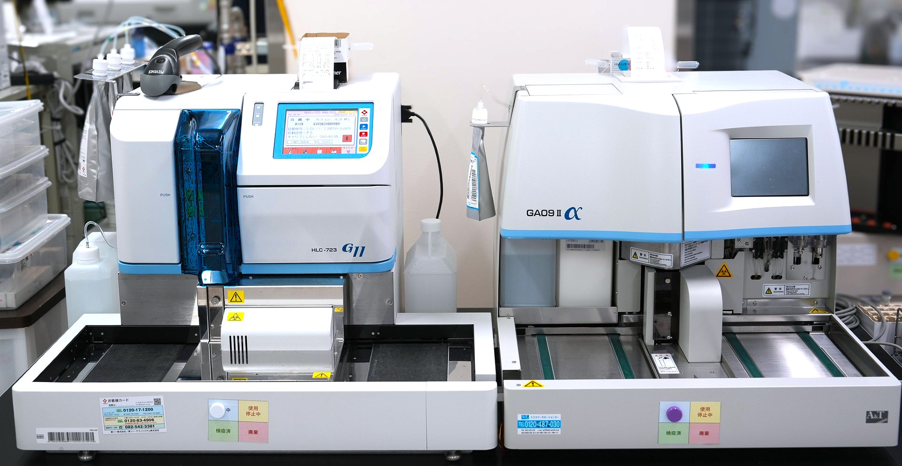
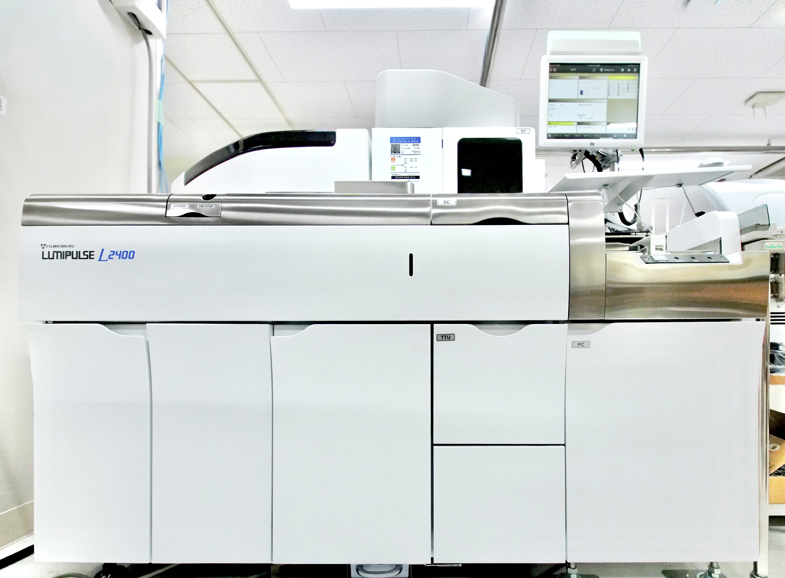

Clinical Chemistry and Immunology
生化学検査では、血液中に含まれる電解質、酵素、脂質や糖、タンパク質などを測定します。肝臓や腎臓の機能や、糖尿病・動脈硬化・貧血などの病気の有無、栄養状態など、患者さんの体の状態を知るのに役立ちます。
• 酵素活性検査 (AST、ALT、AMY、γ-GT、ALP等)
• 電解質検査 (Na、K、Cl等)
• 蛋白検査 (TP、ALB等)
• 生体色素検査 (T-Bil、D-Bil等)
• 糖代謝検査 (GLU、HbA1c、GA、LA等)
• 脂質検査 (TC、TG、HDL-C等)
• 含窒素成分 (UN、CRE、UA、NH3等)
• 各種ホルモン検査(FT3、FT4、TSH等)
• 心不全の病態把握検査 (NT-proBNP)

臨床化学自動分析装置
TBA-FX8（キヤノンメディカルシステムズ社）

自動グリコヘモグロビン分析計 HLC-723G11（東ソー）
全自動糖分析装置GA09II（エイアンドティー社）
免疫血清検査では、抗原抗体反応を利用して、感染症、自己免疫疾患、悪性腫瘍などに関連する検査を行っています。

感染症関連
HBs抗原、HCV抗体、HIV、梅毒 等
腫瘍マーカー
CEA、CA19-9、AFP、CA125 等
その他
自己抗体、薬物濃度 等
感染症検査では、陽性結果の確実な拾い上げを目的として、診療科と連携しながら確認・報告対応を行って います。
当部署では、ISO 15189に基づいた品質管理体制のもと、内部精度管理・外部精度管理を実施し、 検査品質の維持・向上ならびに信頼性の高い検査結果の提供に努めています。